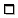
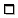

 faz com que o painel ocupe todo o espaço disponível na janela.
|
Janela principal do OmegaT |
contém o menu principal, barra de status e três painéis: |
|
--- painel Editor |
onde você digita e revisa a tradução |
|
--- painel Visualizador de correspondências |
com os segmentos mais similares das memórias de tradução |
|
--- painel Visualizador de glossário |
com a tradução da terminologia |
|
Janela Arquivos do projeto |
|
|
|
|
|
|
|
As caixas de diálogo são usadas para modificar as definições do OmegaT e do projeto. Todas elas estão descritas em seções separadas; abaixo está um resumo sobre sua utilização e como podem ser acionadas:
|
|
|
|
|
|
|
|
|
|

A janela principal é formada por diversos painéis, o menu principal e a barra de status. Você pode mudar a posição de qualquer painel ou mesmo desencaixá-lo para uma janela separada; basta arrastar o painel pelo nome. Dependendo do status no painel, este pode exibir ícones diferentes no canto direito.
 reduz o painel para mostrar somente o nome na parte inferior, perto da barra de status.
reduz o painel para mostrar somente o nome na parte inferior, perto da barra de status.
 faz com que o painel ocupe todo o espaço disponível na janela.
 coloca o painel na posição que estava antes de ser minimizado ou maximizado.
coloca o painel na posição que estava antes de ser minimizado ou maximizado.
 desconecta o painel da janela principal para uma janela separada.
desconecta o painel da janela principal para uma janela separada.
 recoloca o painel dentro da janela principal.
recoloca o painel dentro da janela principal.
É possível também dispor os painéis de forma que se sobreponham. Neste caso os painéis exibirão uma guia na parte superior. Clique na guia para colocar o painel no primeiro plano. Para redimensionar os painéis, basta arrastar os separadores que ficam entre eles.
Os números no canto inferior direito registram o progresso da tradução:

| 31/34 | número de segmentos - traduzido / total, para o arquivo atual |
| 2530/2605 | número de segmentos únicos - traduzido / total no projeto |
| 3196 | total de segmentos (incluindo repetições) no projeto |
| 39/53 | número de caracteres no segmento, texto original e na tradução |
Aqui você digitará e editará a tradução. O painel Editor exibe o texto do documento com a sua tradução nos segmentos já traduzidos e o texto original nos segmentos pendentes de tradução. O texto exibido é dividido em segmentos; você pode se movimentar pelo documento com a barra de rolagem e clicar duas vezes em qualquer segmento para abri-lo. No caso acima, os segmentos já traduzidos estão marcados; a configuração pode ser mudada para atender às suas preferências, por exemplo, marcação em amarelo (veja o menu Exibir).
Um dos segmentos é o segmento ativo, ou aberto. É o único exibido em duas partes: a parte superior é o texto original, em negrito com um fundo verde; a parte inferior é o campo de edição, delimitado por dois marcadores - o da esquerda, segmento nnnn onde nnnn indica o número do segmento no projeto e o marcador da direita é o fim do segmento. Use a parte superior como referência e digite sobre ou modifique o conteúdo do campo de edição para conter sua tradução.
Dependendo das definições em Modo de trabalho o campo de edição para segmentos não traduzidos pode ficar em branco, conter o texto fonte ou a melhor correspondência parcial encontrada na memória de tradução. Ao passar para um outro segmento, a tradução é validada e guardada. Se quiser que o segmento permaneça sem tradução, basta deixá-lo em branco apagando todo o texto (selecione tudo com Ctrl+A e apague com Del). OmegaT pode lembrar uma tradução quando for idêntica ao texto original. Isto é um recurso útil em documentos que contêm marcas comerciais, nomes próprios e outros nomes ou partes em um terceiro idioma que não requerem tradução.
Veja Tradução e edição para obter mais detalhes.

Ao passar para o próximo segmento, a primeira correspondência parcial (a que tiver melhor porcentagem de semelhança) é selecionada automaticamente. A correspondência parcial selecionada será destacada em negrito, as palavras que não constam no segmento a ser traduzido aparecerão em azul e a palavra adjacente às partes que faltam estarão marcadas em verde. O usuário pode selecionar uma outra correspondência pressionando Ctrl+2, 3, 4, ou 5. Claro que se não houver apenas quatro correspondências, não adianta pressionar Ctrl+5. Para usar na sua tradução a correspondência selecionada, pressione Ctrl+R para substituir o campo destino com a correspondência, ou Ctrl+I para inseri-la no campo destino na posição onde está o cursor.
A porcentagem de correspondência - ou seja, a diferença entre o segmento original e as possíveis correspondências - é mais ou menos equivalente ao número de palavras comuns no segmento 'correspondente' dividido pelo número de palavras no segmento mais longo dos dois. Se usar o plug-in tokenizer (enumeração), as palavras em dois segmentos serão primeiro reduzidas às suas raizes. Alternativamente, as palavras não são reduzidas e apenas a interpontuação, números e tags serão ignorados. Por fim, as diferenças nas tags, números e interpontuação - que foram ignoradas nos dois primeiros casos - podem ser incluídas no cálculo. O visualizador de correspondência pode mostrar as três métricas, conforme segue:
<% de correspondência, quando o plugin tokenizer é usado / % para a correspondência predefinida do OmegaT / % de correspondência com tags, números, pontuação incluídos>No exemplo acima, as primeiras duas métricas (46/46) são iguais, pois o tokenizer não foi usado. A terceira porcentagem (39) é menor porque foram usadas as diferenças na interpontuação e tags.
Se não houver nenhum nome de arquivo exibido, a fonte é a memória de tradução predefinida do projeto. Os segmentos órfãos (a correspondência no. 1) indicam os segmentos na memória de tradução predefinida do projeto que não possuem correspondentes nos arquivos originais. No caso acima, a frase original, já traduzida no OmegaT, foi editada.
No painel 'Glossário' você pode acessar sua coleção particular de expressões e terminologia especializada, acumulada nos seus arquivos de glossários. Ele mostra a tradução dos termos encontrados no segmento aberto, mas somente para fins de referência e não permite nenhuma inserção ou substituição na sua tradução.

O segmento fonte no exemplo acima era “In most translation jobs it is considered important to have the translated document look similar to the original.”, e duas palavras - 'document' e 'translation' - foram encontradas no arquivo de glossário. O OmegaT também suporta termos compostos de diversas palavras, mas em uma forma muito básica: se duas palavras de um termo são encontradas no segmento aberto, o termo será exibido.
Dicionários são a versão eletrônica das versões impressas do MerriamWebsters, Duden, Larousse etc., que você tem na sua escrivaninha.
Se o Google Tradutor estiver ativado no Menu → Opções, o painel Google Tradutor fornecerá sugestões para a tradução do segmento atual, que pode ser inserida no segmento a ser traduzido.
Obviamente você pode usar o menu principal para acessar todas as funções do OmegaT. Veja o anexo Menu principal para obter uma descrição completa de todos os menus e seus itens. As funções mais usadas podem ser acessadas através de atalhos de teclado, assim quando você estiver acostumado com eles, não precisará mais navegar até os menus durante a tradução.
A barra de status mostra, na parte inferior da janela principal, as mensagens relacionadas ao fluxo de trabalho. Esta barra mostra mensagens de feedback ao usuário sobre operações específicas que estão em andamento. Também mostra o número de correspondências parciais da memória e equivalentes no glossário para o segmento aberto.
A janela 'Arquivos do projeto' relaciona os arquivos do projeto e exibe outras informações a ele relacionadas. Ela é exibida automaticamente quando o OmegaT carrega um projeto. Para fechá-la use esc, e para abri-la ou acioná-la para o primeiro plano use Ctrl+L.
Esta janela exibe as seguintes informações:
a lista de todos os arquivos de tradução no projeto. Esses arquivos que o OmegaT pode processar estão na pasta 'source'. Clique em qualquer arquivo para abri-lo para tradução.
o arquivo atualmente disponível no painel Editor é destacado com um fundo azul
o número de segmentos em cada arquivo é exibido próximo ao nome do arquivo.
o número de segmentos únicos (diferentes) em todo o projeto.
o número de segmentos únicos que você já traduziu. É atualizado sempre após a tradução de um segmento.
O conjunto de segmentos únicos é computado considerando-se todos os segmentos, deduzindo todos os segmentos duplicados que são semelhantes até nas letras maiúsculas e minúsculas ("Rodar" e "rodar" são consideradas diferentes).
A diferença entre "Números de segmentos" e "Número de segmentos únicos" dá uma idéia aproximada das repetições de segmentos no texto. Note que esses números não dão uma indicação clara da importância das repetições: segmentos podem ser longas frases repetidas diversas vezes (muita sorte!) ou simplesmente palavras-chaves preenchendo uma tabela (que azar....) O project_stats.txt localizado na pasta /omegat do projeto contém mais informações detalhadas sobre o segmento do arquivo.
É possível modificar o número de segmentos/segmentos únicos modificando as regras de segmentação. No entanto, tais modificações devem ser evitadas a todo custo, uma vez que você já começou a traduzir o projeto. Veja as regras de segmentação para obter mais informações.
Para acrescentar arquivos fonte ao projeto, basta clicar no botão "Importar arquivos fonte...". Ele copia os arquivos selecionados para a pasta /source e recarrega o projeto com os novos arquivos. Para acrescentar arquivos de páginas de Internet ao projeto, gravados no MediaWiki, basta clicar no botão "Importar do MediaWiki" e fornecer o URL correspondente.
A janela de busca é usada para localizar segmentos específicos no projeto. Podem existir diversas janelas de busca abertas simultaneamente. Para abrir uma nova, use Ctrl+F na janela principal. A janela de busca consiste de um campo de texto para sequência de pesquisa ou palavras-chave, bandeiras e opções para a criação da pesquisa e uma área de exibição contendo os resultados da busca.
As buscas são feitas nos segmentos fonte e na tradução. A busca também pode ser feita em qualquer pasta, mas considere que o OmegaT só pode fazer pesquisas em arquivos compatíveis.
As buscas podem usar caracteres curingas * e ? bem como expressões regulares.
Após digitar a palavra ou string clique no botão Buscar; o campo de busca mostrará todos os segmentos correspondentes que encontrar no projeto.
Visto que o OmegaT processa todos os segmentos iguais como uma única entidade, apenas o primeiro segmento único é exibido. Marque a opção 'Exibir todos os resultados' para mostrar todas as instâncias de segmentos idênticos. Os segmentos serão exibidos na sequência em que aparecem no projeto. Os segmentos traduzidos serão exibidos na parte superior com o texto original e a tradução na parte inferior; os segmentos não traduzidos aparecerão apenas com o texto original.
Clique em um segmento se precisar abri-lo no Editor para modificações. Depois, é só voltar à janela de busca e ir ao próximo segmento, repetindo o processo. Este recurso é útil para atualizações de terminologia em todo o projeto.
A janela de verificação de tags detecta e relaciona problemas de tag na tradução. Para abrir a janela, use Ctrl+T. A janela abre uma tabela de três colunas com um link para o segmento e seu conteúdo original e tradução:

As tags estão destacadas em azul escuro para facilitar a comparação entre o original e o conteúdo traduzido. Clique no link para abrir o segmento no Editor. Corrija o erro, se necessário, e pressione Ctrl+T para voltar à janela de verificação de tags para ver se há outros erros. No primeiro e terceiro caso acima, as tags estão agrupadas incorretamente, e no segundo caso, na tag inicial o sinal < está faltando.
Os erros de tag ocorrem na manipulação de tags na tradução que acabam não refletindo o número e sequência do segmento original. Algumas manipulações de tags são necessárias e não causam erros; algumas causarão problemas quando for criado o documento traduzido. As tags geralmente representam algum tipo de formatação no texto original. Simplificar a formatação do texto original reduz bastante a quantidade de tags.
O navegador da Ajuda (que exibe este manual) pode ser ativado pressionando a tecla F1 ou com um clique em Ajuda -> Manual do Usuário... no menu principal.
Na janela aparecerá o manual e dois botões: Voltar e Conteúdo. O manual do usuário é um documento HTML com links para os diversos capítulos. Clique em um link, como faria em um navegador da Internet, para acessar a página desejada.
O manual do usuário está localizado na subpasta docs na pasta de instalação do OmegaT, portanto, se quiser ver a documentação em português, clique no arquivo doc/pt_BR/index.hmtl no navegador. Dessa forma você poderá seguir os links externos também, pois o navegador da ajuda incluído aqui não aceita links externos da Internet.
| Avisos legais | Home | Índice |